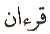

The Arabic letter
Qaf ( ) is the equivalent of the letter
'Q' in the English alphabet. The position of the letter Qaf (
) is the equivalent of the letter
'Q' in the English alphabet. The position of the letter Qaf ( ) in the normal Arabic character set is 21.
In the numerical character set, Abjad, Qaf (
) in the normal Arabic character set is 21.
In the numerical character set, Abjad, Qaf ( )
has the value of 100. This article is about the spiritual meaning
of the letter Qaf (
)
has the value of 100. This article is about the spiritual meaning
of the letter Qaf ( ).
).
The Letter Qaf ( ) is one of the Muqattaat Letters.
That is, it is used as a letter in an opening verse of a chapter
in the Quran. The letter Qaf (
) is one of the Muqattaat Letters.
That is, it is used as a letter in an opening verse of a chapter
in the Quran. The letter Qaf ( )
is used twice as a Muqattaat Letter in the Quran. First in Chapter
42 Ash Shuraa, and next in Chapter 50 which is also named Qaf
after the Letter Qaf (
)
is used twice as a Muqattaat Letter in the Quran. First in Chapter
42 Ash Shuraa, and next in Chapter 50 which is also named Qaf
after the Letter Qaf ( ).
).
The Islamic Scripture
is named QURAN . Quran is a word that starts with the Letter Qaf ( ). The Quran is a powerful Book.
The Quran is our Guidance from Allah. And to emphasis this Allah
tells us:
). The Quran is a powerful Book.
The Quran is our Guidance from Allah. And to emphasis this Allah
tells us:

The other usage of the
Letter Qaf ( ) is in
Chapter 42:
) is in
Chapter 42:

The entire Quran was
revealed to Muhammad over 23 years.
over 23 years.
The Quran is a unique Book that has been preserved over 1400 years and remained intact in the Arabic language. That is why we must learn to read the Quran in the Arabic language. The language that it has been revealed in. Of course, to understand the Message we can refer to the translations.
The first revelation
was on the Night of Qadr - Power.
The Night of Qadr is in
the month of Ramadan
- fasting, which is the 9th lunar month in the Islamic calendar.
Jibreel ( ) appeared and said "Iqraa" -
) appeared and said "Iqraa" -  Read! to the First
Noor -
Read! to the First
Noor - Light, created by
Allah. Did you follow that ?
Light, created by
Allah. Did you follow that ?
That was the beginning
of the Quran as we know it. The
first revelation of the Quran was 5 verses. And 5 =  for
Hidayat - Guidance for those who believe.
for
Hidayat - Guidance for those who believe.
We now know why the Book is called the Quran, but what does the Quran contain ? It contains words.
The Quran contains speech Kalaam. The speech is made of words which are Kalima.
And who was it that used to bring the Kalima ?
Jibreel ( )
of course. Now the word Kalaam - Speech, or the word Kalima - Words, begin with the Letter Kaaf ().
They were revealed by Jibreel (
)
of course. Now the word Kalaam - Speech, or the word Kalima - Words, begin with the Letter Kaaf ().
They were revealed by Jibreel ( ) whose
name starts with the Letter Jeem (
) whose
name starts with the Letter Jeem ( ).
).
The numerical value of the Letter Kaaf () is 20.
The numerical value of
the Letter Jeem ( ) is 3.
) is 3.
If we add the numerical value of these two letters we get 23.
Therefore the entire Quran could have been revealed in 23 days, 23 weeks, 23 months or 23 years. And from history we know for a fact that it took 23 years for the entire Quran to be revealed.
It took 23 years, (2
+ 3 = 5 =  ) for Hidayat
- Guidance for believers to complete. Allah is the Best Planner.
Subhan Allah.
) for Hidayat
- Guidance for believers to complete. Allah is the Best Planner.
Subhan Allah.
The above event occurred
in the 9th month. The completion of the Quran was prompted by
the following verse being revealed during the Farewell Pilgrimage
in the 12th month. Muhammad delivered
the sermon ....
delivered
the sermon ....
"I have left with you that which, if you hold on to it, it shall preserve you from error, a clear indication, the Book of Allah and the word of His Rasool. People, hear my words and understand. " Then he recited the last revelation:
Muhammad ended his sermon by asking the question:
ended his sermon by asking the question:
"People, have I delivered my Message to you faithfully ?"
They replied: "Allahumma, Yes."
Muhammad raised his index finger and said "Allahumma, bear witness!"
raised his index finger and said "Allahumma, bear witness!"
That was the completion of the Quran. The Chapters and Verses of the Quran were organised and complete.
When we open our copy of the Quran we find that the Guidance starts from:
We have the Kitab - Book which starts to Guide with three letters
Alif Laam Meem. The word Kitab
starts with the Letter Kaaf () =
20 and that Kitab starts with 3 Letters and we have 23 years Revelation
in our hands, if only we could learn to really READ it and understand
it. The Muslims can once again start to set a fine example for
the rest of the people and be a credit to our Master Sayyidina
Muhammad  .
.
With the completion of
the Islam and Quran, Muhammad knew
he had come to the end of his Mission.
knew
he had come to the end of his Mission.
How did Muhammad know this was the final year ?
know this was the final year ?
The first clue was the
recitation of the Quran twice in the month of Ramadan. The Letter
Qaf ( ) is used
as a Muqattaat Letter 2 times. The second clue was the completion
of the Quran.
) is used
as a Muqattaat Letter 2 times. The second clue was the completion
of the Quran.
The answer is in the
usage of the Letter Qaf ( )
as Muqattaat Letter. In Chapter 50 it occurs in Verse 1. This
is normal.
)
as Muqattaat Letter. In Chapter 50 it occurs in Verse 1. This
is normal.
In Chapter 42 the Letter
Qaf ( ) occurs
in Verse 2. And this Verse is ODD. As it was stated in the article
on Letter Ayn (
) occurs
in Verse 2. And this Verse is ODD. As it was stated in the article
on Letter Ayn ( ), this Ayn (
), this Ayn ( ) in Ayn Seen Qaf
) in Ayn Seen Qaf  represents
the second coming of - Isa (
represents
the second coming of - Isa ( ).
Therefore the Letter Qaf (
).
Therefore the Letter Qaf ( )
in this verse is for the arrival of Qiyamat
- The Day of Judgement. And that
Day will arrive after Isa (
)
in this verse is for the arrival of Qiyamat
- The Day of Judgement. And that
Day will arrive after Isa ( ).
).
Qiyamat is another word
that begins with the Letter Qaf ( ).
Qiyamat is the day of Reckoning. There
is an entire chapter in the Quran with that name. The Chapter
Qiyamat is 75.
).
Qiyamat is the day of Reckoning. There
is an entire chapter in the Quran with that name. The Chapter
Qiyamat is 75.
Just as Muhammad  left this world when the Quran completed,
so will we all leave this planet on Qiyamat.
Destination Unknown!
May Allah have Mercy
on us all. Ameen.
left this world when the Quran completed,
so will we all leave this planet on Qiyamat.
Destination Unknown!
May Allah have Mercy
on us all. Ameen.
| BACK |